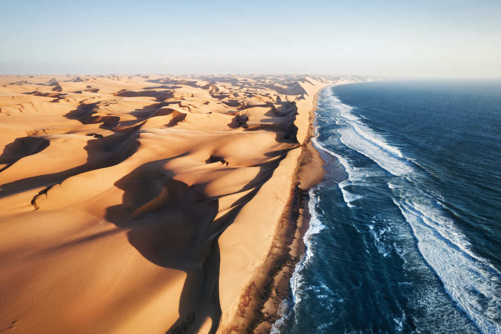

АКТУЕЛНА ПОНУДА

ПУСТИНАТА НАМИБ И САФАРИ
Намибија
16.07 - 25.07
Откријте ја уникатната убавина на Намибија, земја на бескрајни пустински пејзажи, високи црвени дини и неверојатен див свет. Истражете ја познатата пустина Намиб и доживејте незаборавно сафари низ африканските предели. Очекуваат ве спектакуларни пејзажи, диви животни и незаборавни авантури под африканското сонце.
АФРИКАНСКА АВАНТУРА
Главниот град и културен центар на Намибија, познат по спојот на африканската атмосфера и германското колонијално наследство. Градот нуди интересни знаменитости, локални пазари и пријатна атмосфера за прошетка и запознавање со Намибија.
Една од најстарите пустини во светот, препознатлива по бескрајните црвени песочни дини и уникатните пустински пејзажи.Намиб нуди незаборавна атмосфера, прекрасни залези и идеални услови за фотографирање и набљудување на ѕвезденото небо.
Еден од највпечатливите предели на пустината Намиб, познат по високите црвени дини и Deadvlei со карактеристичните суви дрвја. Ова место создава уникатен контраст меѓу белото пустинско тло, темните дрвја и црвените дини, што го прави една од најпрепознатливите природни атракции во Намибија.
Еден од најпознатите национални паркови во Африка, познат по богатството на дивиот свет и големите отворени предели. За време на сафари може да се набљудуваат слонови, лавови, жирафи, зебри и бројни други животни во нивната природна средина.
Валвис Беј е живописен крајбрежен град, познат по своето пристаниште и близината до уникатните пустински предели. Сендвич Харбор нуди спектакуларен пејзаж каде огромните песочни дини директно се спојуваат со Атлантскиот Океан, создавајќи една од највпечатливите природни глетки во Намибија.
Шармантен крајбрежен град на Атлантскиот Океан, препознатлив по германската колонијална архитектура, уредените улици и пријатната атмосфера. Градот е интересна комбинација на европско наследство, африканска култура и океанско крајбрежје.
Состанок со групата на аеродром во Скопје, 2 часа пред летот. Следува директен лет до Виндхук и пристигнување на аеродромот. По завршувањето на аеродромските процедури следува организиран трансфер до хотелот и сместување. По сместувањето следува време за одмор и освежување. Попладнето е предвидено за кратка прошетка и запознавање со околината. Вечерта е слободна за вечера и одмор. Ноќевање во хотел.
Појадок во хотелот и организирана прошетка низ Виндхук. Следува посета на Christ Church, Independence Memorial Museum и Tintenpalast. Потоа продолжува разгледувањето на центарот и локалните пазари. Предвидено е слободно време за ручек, кафе, шопинг и фотографирање. Попладнето е слободно за индивидуално истражување на градот. Вечерта е слободна за одмор.Ноќевање во хотел.
Појадок и организирано тргнување од Виндхук кон областа на пустината Намиб. По пристигнувањето следува сместување во lodge или camp во близина на пустината. Потоа е предвидено време за прво запознавање со пустинскиот пејзаж и околината. Патниците ќе имаат можност за фотографирање на црвените дини и уникатната природа. Попладнето следува слободно време за одмор и уживање во пустината. Вечерта е предвидено уживање во африканскиот залез. Ноќевање во областа на Намиб.
Појадок во сместувањето и слободно време за одмор. Потоа следува организирана авантура со квадови низ песочните дини на Намиб. Во текот на возењето ќе се истражуваат пустинските предели, црвените дини и околните планински пејзажи. Предвидено е време за фотографирање и уживање во уникатната природа. Попладнето е слободно за релаксација и индивидуални активности. Вечерта е слободна за одмор. Ноќевање во областа на Намиб.
Појадок во сместувањето и слободно време за одмор и уживање во пустинската околина. Во текот на денот е предвидено слободно време за релаксација и индивидуални активности. Попладнето следува прошетка низ околните пустински предели и фотографирање на уникатниот пејзаж. Во вечерните часови следува организирано набљудување на ѕвезденото небо во пустината. Поради малото светлосно загадување, Намиб нуди прекрасни услови за набљудување на ноќното небо. Вечерта продолжува со уживање во мирот и атмосферата на пустината. Ноќевање во областа на Намиб.
Рано наутро следува организирано тргнување кон Сосусвлеј.
Следува посета на познатите црвени дини и пустинските предели на Namib-Naukluft National Park.
Предвидена е посета на Deadvlei, познат по своите суви дрвја опкружени со високи песочни дини.
Потоа следува време за фотографирање и уживање во уникатниот пустински пејзаж.
По разгледувањето следува пауза за одмор и ручек.
Попладнето е слободно за релаксација во сместувањето.
Ноќевање во областа на Намиб.
Појадок и организирано тргнување кон Националниот парк Етоша. По пристигнувањето следува првиот Safari Game Drive низ паркот. Во текот на сафари турата постои можност за набљудување на слонови, лавови, жирафи, зебри и други диви животни. Предвидено е време за фотографирање и уживање во африканската природа. По завршувањето следува сместување и слободно време за одмор. Ноќевање во областа на Етоша.
Појадок и организирано тргнување кон Валвис Беј. Следува 4x4 авантура низ Сендвич Харбор, каде огромните песочни дини се спојуваат со Атлантскиот Океан. Во текот на турата ќе се посетат крајбрежните дини и лагуната на Сендвич Харбор. Предвидено е време за фотографирање и уживање во уникатниот пејзаж каде пустината се среќава со морето. По завршувањето на турата следува враќање кон сместувањето. Вечерта е слободна за одмор и подготовка за заминување. Ноќевање.
Појадок и организирано тргнување кон Свакопмунд, крајбрежен град каде пустината се среќава со Атлантскиот Океан. Следува прошетка низ центарот и разгледување на познатите германски колонијални градби. Потоа е предвидено слободно време за ручек, кафе, шопинг и фотографирање. Патниците ќе имаат можност индивидуално да го истражат градот и неговото крајбрежје. Попладнето следува враќање кон сместувањето. Вечерта е слободна за одмор. Ноќевање.
Појадок во хотелот и одјавување согласно предвиденото време. По собирањето на багажот следува организиран трансфер од хотелот до аеродромот. По пристигнувањето следува пријавување за летот и завршување на потребните аеродромски процедури. Следува директен лет назад кон Скопје. По пристигнувањето и преземањето на багажот завршува организираното патување.